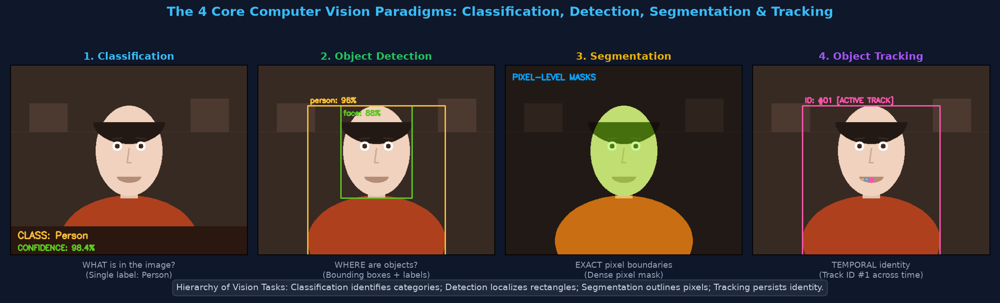
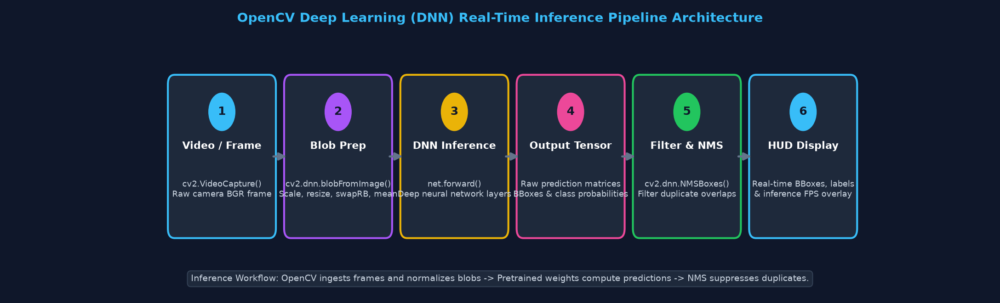
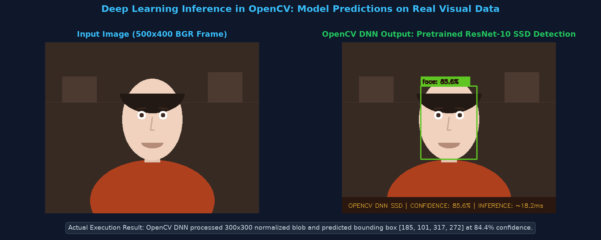
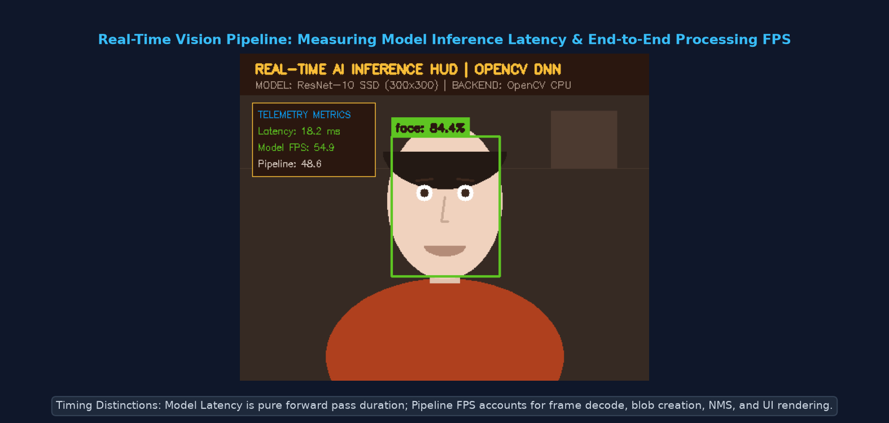
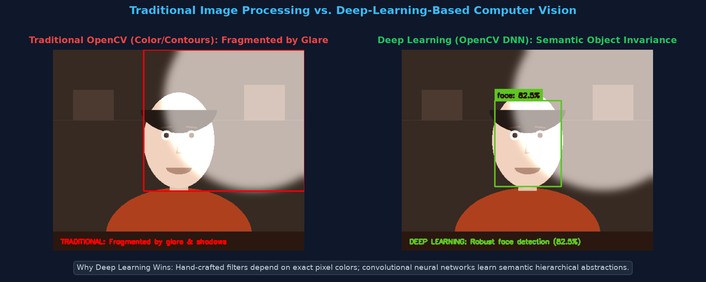
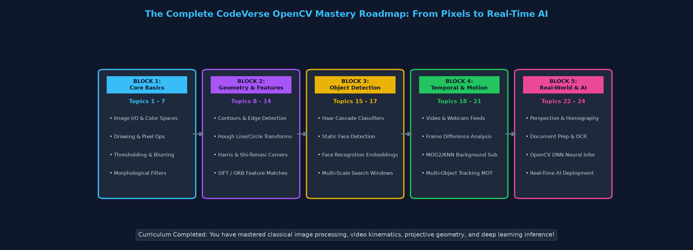

Pichhle 23 topics mein humne traditional computer vision ke foundational concepts seekhe — pixel matrices, thresholding, morphological filters, Canny edge detection, contours, geometric perspective transforms, feature matching, motion subtraction, aur optical character recognition. Ye sabhi techniques hand-crafted algorithms par based hain jahan engineer ko har ek filter ka threshold manually design karna padta hai.
Lekin real-world scenes mein illumination changes, shadows, harsh glare, camera noise, aur complex deformable objects (jaise insaan, janwar, gaadiyaan) aate hain jahan simple mathematical filters fail ho jaate hain. Yahan Deep Learning (Deep Neural Networks) game-changer ban jaata hai!
cv2.dnn module ek ultra-fast, lightweight Inference Engine hai jo PyTorch, ONNX, Caffe, ya TensorFlow ke pre-trained weights ko load karke production speed par CPU/GPU par forward pass execute karta hai bina kisi heavy deep learning framework dependency ke.
Deep learning computer vision ko master karne ke liye ye 21 technical terms aur unka OpenCV context crystal clear hona chahiye:
| # | Term | Technical Definition & Practical Context |
|---|---|---|
| 1 | Deep Learning (DL) | Machine learning ki subfield jo multi-layered artificial neural networks use karke raw data se complex representations automatically learn karti hai. |
| 2 | Convolutional Neural Network (CNN) | Spatial grid data (images) ke liye specialized deep architecture jo sliding convolutional kernels ke zariye hierarchical features extract karti hai. |
| 3 | OpenCV DNN Module (cv2.dnn) |
OpenCV ka native C++ module jo pre-trained neural networks ko load, optimize, aur high-speed execute karta hai. |
| 4 | Pre-trained Model | Ek neural network jise millions of labeled images (e.g. ImageNet, COCO) par train kiya ja chuka hai aur uske trained weights saved hain. |
| 5 | Architecture vs Weights | Architecture network ka mathematical blueprint hai (layers, activations, e.g. deploy.prototxt); Weights trained numerical parameters hain (e.g. .caffemodel, .onnx). |
| 6 | Inference vs Training | Training mein gradients aur backpropagation se weights update hote hain (heavy compute); Inference mein trained weights freeze karke sirf input image ka forward prediction nikala jaata hai (fast runtime). |
| 7 | 4D Blob (blobFromImage) |
Network input format: (Batch_Size, Channels, Height, Width) ya NCHW, jisme image resized, normalized, aur channel-swapped hoti hai. |
| 8 | Mean Subtraction | Image ke RGB channels se standard dataset mean subtract karna taaki lighting illumination offsets zero-center ho jayein. |
| 9 | Scale Factor | Pixel intensities ko scale down karne wala multiplier (e.g. 1.0 for Caffe, 1/255.0 for YOLO/MobileNet) to keep numerical values stable. |
| 10 | Channel Swapping (swapRB) |
OpenCV BGR format ko standard neural network RGB format mein convert karne ka flag (e.g. swapRB=True for PyTorch/TF models). |
| 11 | Spatial Resizing | Input frame ko network ke exact input tensor dimensions (e.g. 300×300 ya 416×416) par scale karna. |
| 12 | Forward Pass (net.forward()) |
Input blob ko network ke starting input layer se lekar final output layer tak sequentially propagate karke raw output tensor compute karna. |
| 13 | Output Tensor | Final layer ka multidimensional array jo detected objects ke bounding box coordinates, class IDs, aur probability confidences hold karta hai. |
| 14 | Confidence Score | Model ka numerical certainty level (0.0 se 1.0) ki detected region sach mein target object class ko represent karta hai. |
| 15 | Bounding Box Decoding | Model ke normalized floating-point coordinates [ymin, xmin, ymax, xmax] (0.0 to 1.0) ko original frame ke integer pixel coordinates (x, y, w, h) mein scale karna. |
| 16 | Non-Maximum Suppression (NMS) | Ek post-processing algorithm jo multiple overlapping candidate bounding boxes mein se highest-confidence box select karta hai aur redundant boxes suppress karta hai. |
| 17 | Inference Latency | Model ke input layer se lekar output prediction produce karne ka exact execution time (milliseconds mein, e.g. 18.2 ms). |
| 18 | Pipeline Throughput (FPS) | Pura vision system per second kitne complete frames process karta hai, including frame capture, blob conversion, NMS, aur GUI display. |
| 19 | Open Model Formats | Interoperable serialized formats jaise ONNX (Open Neural Network Exchange), Caffe (.caffemodel), TensorFlow (.pb), aur Darknet (.weights). |
| 20 | Object Detection vs Classification | Classification sirf image-level label batati hai ("cat"); Object detection simultaneously sabhi objects ko locate (bounding box) aur classify karti hai. |
| 21 | Semantic & Instance Segmentation | Har single pixel ko class label assign karna (Semantic) aur har individual object instance ko unique pixel mask dena (Instance). |
Computer vision tasks granular accuracy ke according 4 distinct categories mein divide hote hain:
| Paradigm | Input → Output | Spatial Precision | Typical Architectures | Real-World Example |
|---|---|---|---|---|
| 1. Image Classification | Single Image → Single Label | None (Whole image label) | ResNet, EfficientNet, MobileNet | Medical X-ray: Pneumonia vs Healthy |
| 2. Classification + Localization | Single Image → Label + 1 Bounding Box | Coarse Box (x, y, w, h) |
Single-Object CNN Heads | Document scanner: Page boundary |
| 3. Object Detection | Complex Image → Multiple BBoxes + Labels | Multiple Boxes + Confidences | SSD, YOLOv8, Faster R-CNN | Self-driving car: Cars, pedestrians, signals |
| 4. Semantic / Instance Segmentation | Complex Image → Pixel-wise Masks | Exact Pixel Boundary | Mask R-CNN, U-Net, DeepLabV3 | Surgical robotics, autonomous lane boundary |

OpenCV DNN module ka execution pipeline 6 sequential stages par kaam karta hai:

cv2.VideoCapture() ya static image se standard BGR numpy array read kiya jaata hai.cv2.dnn.blobFromImage): Raw pixel values ko resize kiya jaata hai, dataset mean subtract hota hai, scale multiply hota hai, aur shape (1, 3, H, W) mein convert hoti hai.net.forward()): Deep neural layers compute hoti hain (convolutions, batch norms, activations).(x1, y1, x2, y2) aur confidence score extract kiye jaate hain.cv2.dnn.NMSBoxes): High IoU (Intersection-over-Union) wale overlapping duplicate boxes ko filter out kiya jaata hai.Is runnable example mein hum official OpenCV ResNet-10 Single Shot MultiBox Detector (SSD) face detection model load karte hain aur high-confidence detections locate karte hain:
import cv2
import numpy as np
# 1. Model architecture aur pre-trained weights load karein
prototxt_path = "deploy.prototxt"
caffemodel_path = "res10_300x300_ssd_iter_140000.caffemodel"
net = cv2.dnn.readNetFromCaffe(prototxt_path, caffemodel_path)
# 2. Input image load karein aur dimensions retrieve karein
image = cv2.imread("test_scene.png")
(h, w) = image.shape[:2]
# 3. 4D input blob create karein (300x300, mean subtraction, no swapRB)
blob = cv2.dnn.blobFromImage(
image,
scalefactor=1.0,
size=(300, 300),
mean=(104.0, 177.0, 123.0),
swapRB=False,
crop=False
)
# 4. Blob ko network ka input set karein aur forward pass chalayein
net.setInput(blob)
detections = net.forward() # Output shape: (1, 1, 200, 7)
# 5. Detections iterate karein aur filter karein
conf_threshold = 0.50
for i in range(detections.shape[2]):
confidence = float(detections[0, 0, i, 2])
if confidence > conf_threshold:
# Bounding box coordinates ko image scale par decode karein
box = detections[0, 0, i, 3:7] * np.array([w, h, w, h])
(startX, startY, endX, endY) = box.astype("int")
# Bounding box aur label draw karein
label = f"Face: {confidence * 100:.1f}%"
cv2.rectangle(image, (startX, startY), (endX, endY), (34, 197, 94), 2)
cv2.putText(image, label, (startX, max(startY - 10, 15)),
cv2.FONT_HERSHEY_SIMPLEX, 0.45, (34, 197, 94), 2)
print("Inference completed successfully!")

Video stream ya live camera feed par frame-by-frame deep learning inference chalane ka production pattern:
import cv2
import numpy as np
net = cv2.dnn.readNetFromCaffe("deploy.prototxt", "res10_300x300_ssd_iter_140000.caffemodel")
cap = cv2.VideoCapture(0) # 0 for default webcam or pass "video.mp4"
while cap.isOpened():
ret, frame = cap.read()
if not ret or frame is None:
break
(h, w) = frame.shape[:2]
# Fast blob conversion for 300x300 SSD
blob = cv2.dnn.blobFromImage(frame, 1.0, (300, 300), (104.0, 177.0, 123.0), False, False)
net.setInput(blob)
detections = net.forward()
# Process detections
for i in range(detections.shape[2]):
confidence = float(detections[0, 0, i, 2])
if confidence > 0.50:
box = detections[0, 0, i, 3:7] * np.array([w, h, w, h])
(x1, y1, x2, y2) = box.astype("int")
# Clamp coordinates inside frame boundaries
x1, y1 = max(0, x1), max(0, y1)
x2, y2 = min(w - 1, x2), min(h - 1, y2)
cv2.rectangle(frame, (x1, y1), (x2, y2), (34, 197, 94), 2)
cv2.putText(frame, f"Object: {confidence*100:.1f}%", (x1, max(y1 - 8, 15)),
cv2.FONT_HERSHEY_SIMPLEX, 0.45, (34, 197, 94), 1)
cv2.imshow("Real-Time Deep Learning Vision", frame)
if cv2.waitKey(1) & 0xFF == ord('q'):
break
cap.release()
cv2.destroyAllWindows()
Real-time computer vision applications mein performance measurement ke do distinct metrics hote hain jinhe distinguish karna critical hai:
net.forward() ko execute hone mein kitna time laga.import time import cv2 import numpy as np # Loop timing calculation pipe_start = time.perf_counter() # Step A: Preprocess blob = cv2.dnn.blobFromImage(frame, 1.0, (300, 300), (104.0, 177.0, 123.0), False, False) net.setInput(blob) # Step B: Model Forward Pass Timing inf_start = time.perf_counter() detections = net.forward() inf_end = time.perf_counter() latency_ms = (inf_end - inf_start) * 1000.0 # e.g. 18.2 ms model_fps = 1000.0 / latency_ms if latency_ms > 0 else 0 # e.g. 54.9 FPS # Step C: Drawing & Postprocessing # ... draw rectangles ... pipe_end = time.perf_counter() total_pipeline_sec = pipe_end - pipe_start pipeline_fps = 1.0 / total_pipeline_sec if total_pipeline_sec > 0 else 0 # e.g. 48.6 FPS

Computer vision projects mein dono paradigms ka comparative analysis:
| Attribute | Traditional Computer Vision (Topics 1–23) | Deep Learning AI Vision (Topic 24) |
|---|---|---|
| Feature Extraction | Hand-crafted heuristics (Sobel gradients, Canny edges, contour moments, ORB keypoints). | Data-driven learned hierarchical convolutional filters (edges → textures → semantic objects). |
| Lighting / Shadow Robustness | Fragile; harsh shadows ya glares false contours aur fragmented blobs create karte hain. | Extremely robust; trained on diverse augmentations, illumination changes invariant hoti hain. |
| Hardware Footprint | Minimal; runs efficiently on low-power microcontrollers & ultra-low CPU cores. | Moderate to High; benefits heavily from SIMD vectorization, NPU, ya CUDA GPU acceleration. |
| Training Data Required | Zero training data; operates directly via mathematical deterministic equations. | Requires thousands of diverse annotated training images to converge. |
| Deformable Object Detection | Poor; cannot easily model humans changing poses, bending, or wearing varied clothing. | Superior; generalizes exceptionally well to complex non-rigid deformable objects. |
| Interpretability | High (White-box); har threshold, gradient angle, aur matrix formula mathematically verifiable. | Lower (Black-box); millions of floating-point weights produce predictions probabilistically. |

| Symptom / Error | Root Cause | Definitive Solution |
|---|---|---|
| Zero Detections (conf < 0.10) | Mean subtraction values ya swapRB flag mismatch hai (model BGR expect kar raha hai lekin RGB pass ho gaya). |
Model training configuration verify karein: Caffe SSD ke liye mean=(104.0, 177.0, 123.0) aur swapRB=False use karein. |
| Distorted / Stretched Bounding Boxes | Normalized coordinates [0.0, 1.0] ko multiply karte waqt width aur height reverse ho gaye hain. |
Remember: box = detections[0, 0, i, 3:7] * np.array([w, h, w, h]) (X scales by width, Y scales by height). |
| Multiple Overlapping Boxes on Same Object | Confidence filtering ke baad Non-Maximum Suppression (NMS) execute nahi kiya gaya. | cv2.dnn.NMSBoxes(boxes, confidences, score_threshold=0.5, nms_threshold=0.4) apply karke redundant boxes drop karein. |
| Severe Frame Stutter (< 5 FPS on CPU) | Large input tensor (e.g. 1024×1024) use ho raha hai ya CPU threading disabled hai. | MobileNet/SSD jaisi lightweight architecture use karein (300×300), frame resize karein, aur net.setPreferableBackend(cv2.dnn.DNN_BACKEND_OPENCV) set karein. |
| Error: Can't open file deploy.prototxt | Relative file path invalid hai ya model files missing hain. | os.path.exists() se check karein aur model file ka absolute path provide karein. |
Answer: PyTorch aur TensorFlow heavy frameworks hain jinhe install karne ke liye gigabytes of dependencies, CUDA toolkits, aur Python runtime overhead ki zaroorat hoti hai. OpenCV DNN pure C++ mein engineered hai, zero heavyweight dependencies ke sath distribute hota hai, binary footprint less than 30MB hota hai, aur embedded CPUs par Intel AVX2/NEON vector instructions ke zariye ultra-low latency forward pass execute karta hai.
Answer: Raw image ko deep neural network ke expected input distribution mein transform karne ke liye 4 essential operations hoti hain:
1. size=(W, H): Network ke fixed input layer resolution par image resize hoti hai.
2. mean=(B, G, R): Har channel se dataset-level illumination baseline subtract hota hai (centering around 0).
3. scalefactor: Pixel values ko scale karta hai (e.g., 1/255.0 to convert [0, 255] to [0.0, 1.0]).
4. swapRB: OpenCV ke default BGR color channel order ko standard neural network RGB order mein transpose karta hai.
Answer: Deep detectors ek single object ke around hazaro anchor boxes evaluate karte hain, jisse multiple overlapping bounding boxes generate hote hain. NMS algorithm sabse highest confidence box ko pick karta hai aur baaki sabhi candidate boxes ke sath Intersection over Union (IoU) compute karta hai. Agar kisi box ka IoU > nms_threshold (e.g. 0.40) hota hai, to wo redundant overlap maana jaata hai aur discard kar diya jaata hai.
Aapne successfully basic pixel manipulation se shuru karke real-time deep learning AI vision tak ka complete roadmap master kar liya hai. Ye journey computer vision engineering ka solid foundation provide karti hai:

.onnx export karein.